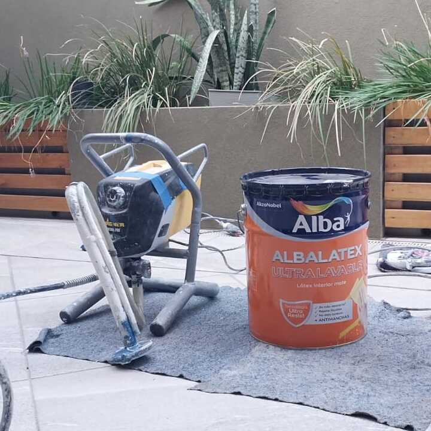
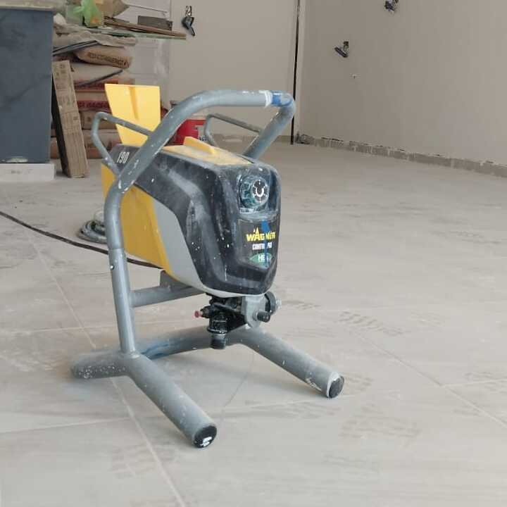
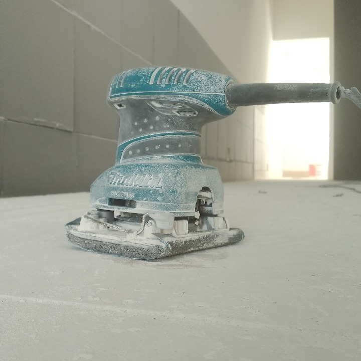
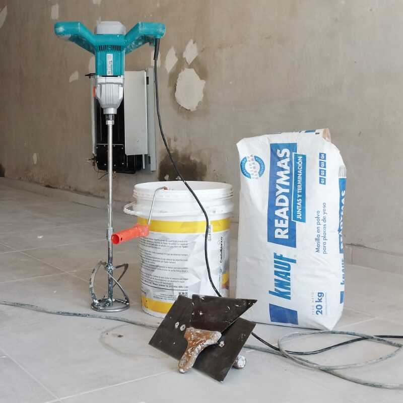

En Mattekudasai Servicios nos apasiona transformar espacios. Somos una empresa dedicada a la pintura de propiedades con un enfoque profesional y meticuloso, ofreciendo resultados duraderos y estéticamente impecables. Desde pequeños retoques hasta renovaciones integrales, nuestro compromiso con la excelencia se refleja en cada proyecto que emprendemos.

Nuestro equipo está conformado por pintores altamente capacitados, con años de experiencia en el tratamiento de superficies y aplicación de pintura en distintos tipos de estructuras. Ya sea en interiores acogedores, fachadas expuestas al desgaste del clima, o en detalles delicados como aberturas y rejas, garantizamos un acabado prolijo y uniforme que realza el valor de cada propiedad.Uno de los pilares que nos distingue es nuestro proceso de preparación de superficies, diseñado para asegurar una adhesión óptima de los materiales y una terminación profesional. Este proceso incluye un lijado profundo, masillado completo de imperfecciones, nuevo lijado de precisión, y la aplicación de impermeabilizantes de alta resistencia, culminando con la pintura aplicada mediante máquinas de presión de última generación. Este tratamiento no solo mejora el aspecto visual, sino que también extiende la vida útil de las superficies tratadas.

Además, trabajamos con productos de primera línea y pinturas ecológicas, seleccionadas según las necesidades del espacio y las preferencias del cliente. Ofrecemos asesoramiento personalizado para elegir combinaciones de colores, acabados y estilos que reflejen la identidad de cada hogar o establecimiento.

En Mattekudasai Servicios, entendemos que más que pintar, creamos ambientes. Nuestro objetivo es superar expectativas y dejar huella en cada rincón, aportando calidad, puntualidad y confianza. Gracias a la satisfacción de nuestros clientes y a nuestro compromiso constante con la mejora, nos hemos posicionado como una opción confiable para quienes buscan transformar sus espacios con profesionalismo y dedicación.